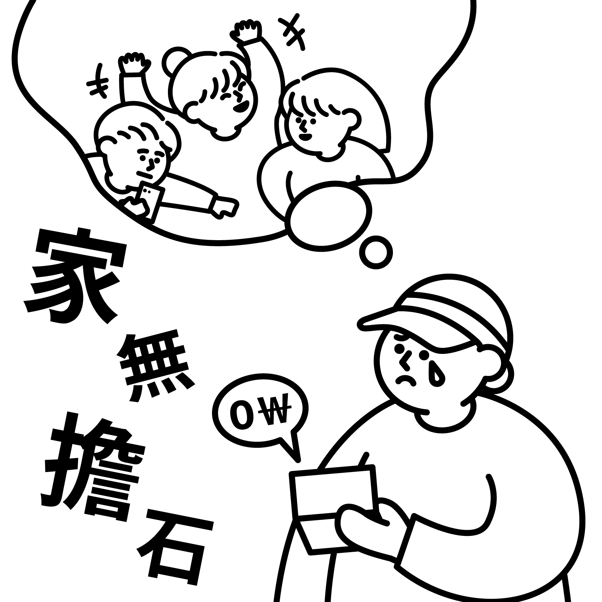

가무담석

家 집 가 | 無 없을 무 | 擔 두섬 담 | 石 섬 석
의미
‘石’은 한 섬, ‘擔’은 두 섬을 뜻하는데, ‘擔石’은 두 항아리 정도의 양식, 곧 얼마 안 되는 분량.
‘집에 저축한 것이 조금도 없음’을 이르는 말
유래
가무담석은 사기 회음후전에 나오는 말이다. 담(擔)은 손 수(手)에 이를 첨(詹)을 짝지어 놓은 글자이다.
손이 닿는 곳에 짊어져야 할 물건이 있다는 뜻에서 '책임지다', '떠맡다'는 의미로 쓰이게 되었다.